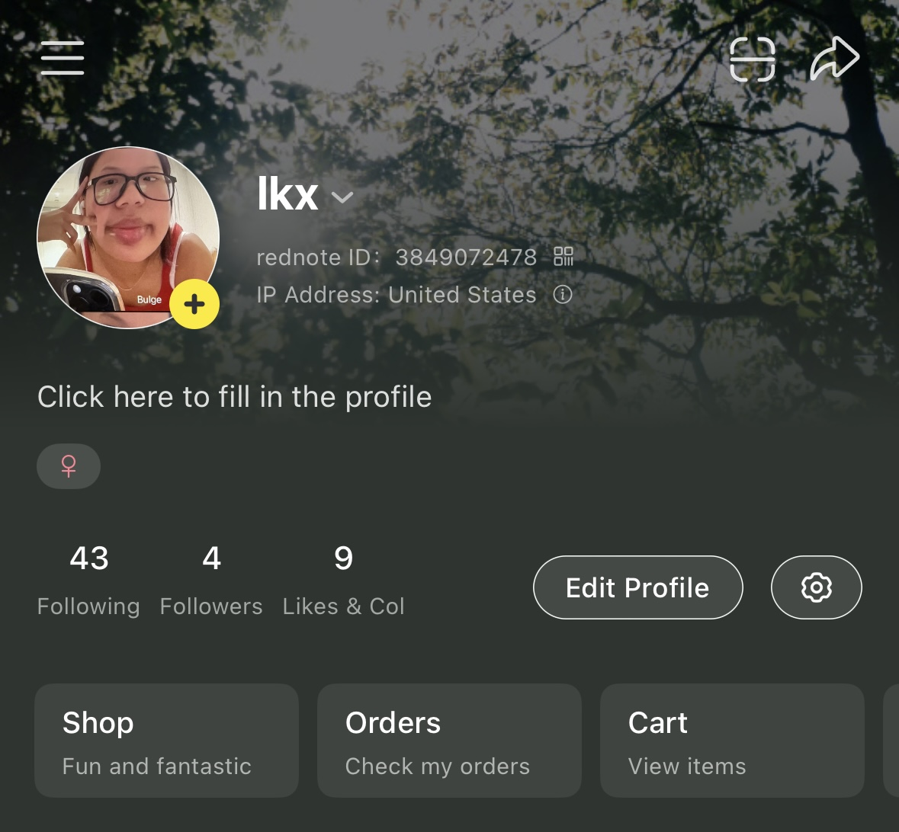
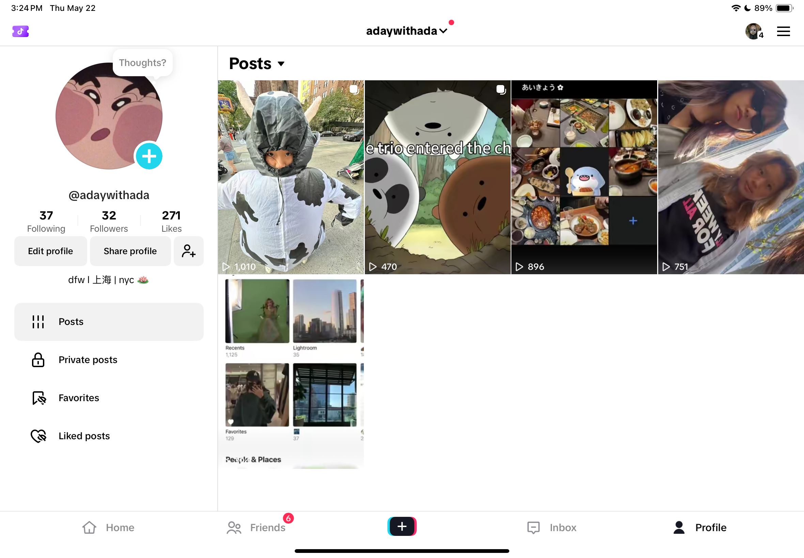

For social media, I mainly share short-form videos that are below five minutes. I do this as the attention spam of viewers on these platforms are shorter, and vieweres utilize these for short entertainment. Social media platforms such as TikTok, Instagram, and Little Red Book (小红书) offer more flexibility with audios.
For Little Red Book, I share videos that are shorter but more personal to me. On here, users listen to a more variety of music, which allows me to have more flexibility in my sound options.

For videos on TikTok, I utilized Capcut to edit videos as there were creators that would link replicas of their videos through Capcut. This allowed me to create videos that aligned the content with the sound, creating an aesthetic appeal to users. My friends and I also utilize TikTok for dance recreation videos as TikTok carries a function to record, stop and change positions, before recording the next stage. Unlike other platforms, this allows users to create videos quicker without switching to other video editing platforms.
